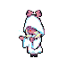

La ruta genocida se trata muy simplemente de matar a todos los monstruos que puedas por cada área dentro del subterráneo y también enfrentarte a 2 de los jefes más difíciles del juego según su propia comunidad. Entre esos 2 jefes se encuentra SANS, el jefe más difícil de todo el juego que solo pelea contra nosotros en esta única ruta.
Pero afortunadamente para vos en esta ruta es fácil matar a monstruos normales para obtener G junto a EXP para aumentar tu "AMOR" y así facilitar futuras peleas (G es la moneda del juego, la cual es irrelevante en genocida porque ya casi no habrá vendedores que tomen tu oro, siendo la excepción los vendedores que están en Waterfall y MTT Resort).
PERO MUCHO OJO: para hacer esta ruta se necesita matar una cuota específica de monstruos. Se tiene que cumplir esta cuota en cada una de las áreas para seguir en la ruta o SI NO se desviará hacia una ruta neutral y vas a perder todo el progreso de genocida, además de que en UNDERTALE tan solo hay un único archivo de guardado así que vas a tener que borrarlo y empezar de cero.
Si querés fijarte en la cuota de muertes necesitadas andá a interactuar con tu punto de guardado más cercano y te va a decir "# numero LEFT". El número que te aparezca será el número de monstruos que te hace falta matar para seguir; este truco te ayudará a no perder el archivo por descuido.
despues de derrotar a SANS por fin llegaremos al nivel maximo de "AMOR", el cual es el nivel 20, e iremos directo al trono para matar a Asgore.
Pero antes de hacerlo el nos cuenta que se le hizo curioso ver a una flor llorar y que esta le advirtiera de nosotros, despues de entrar en el modo de combate Asgore trata de resolver el conflicto invitandonos a tomar te, lo cual el protagonista se niega y le da un golpe que lo hace arrodillarse,y justo cuando estamos por matarlo FLowey interviene y termina el asesinato en un intento de ganar de vuelta nuestra confianza para que no lo matemos, aun que no parece ser suficiente y empieza a llorar suplicando de que no lo matemos.Pero nada de eso importa, asi que despues presionar cualquier tecla vamos a empezar a darle un total de 8 ataques consecutivos para deshacernos porfin de Flowey.
Despues de matar a todos CHARA da aparicion y nos empezara a hablar.Despues de hablarnos un poco ella nos propone borrar el mundo.
nos dan 2 opciones, la primera es BORRAR y la otra NO BORRAR.
Si elegimos la primera ella dira "Bien.Eres un buen compañero." "Estaremos juntos para siempre" "¿a que si?" antes de destruir el mundo con un golpe que solo nos deja un monto de nueves por toda la pantalla por unos cuantos segundos para luego cerrar el juego.
Si elegimos NO BORRAR ella dira "No...?" "Hmm..." "Que curioso." "Me entendiste mal." "¿DESDE CUANDO FUISTE VOS EL QUE TENIA EL CONTROL?", nos da un jumpscare ruidoso y procede a hacer el mismo ataque destroza mundos.
Despues de abrir de vuelta al juego no veremos nada y solo escucharemos un viento soplar.Luego de esperar aproximadamente 10 minutos CHARA volvera a hablarnos un poco y nos terminara ofrecreciendo un trato para traer de vuelta el mundo destruido, en el trato ella nos pide algo que ella quiere, y eso es el alma del protagonista.Si elegimos que si ella cerrara el juego, pero si abrimos de vuelta todo estara de vuelta a la normalidad.Pero si elegimos que no ella nos dejara en el vacio y tendremos que cerrar, abrir de vuelta y esperar 10 minutos por el trato otra vez para esta vez si aceptarlo.

el camino prohibido creado con magia helada ( ruta rara Deltarune )